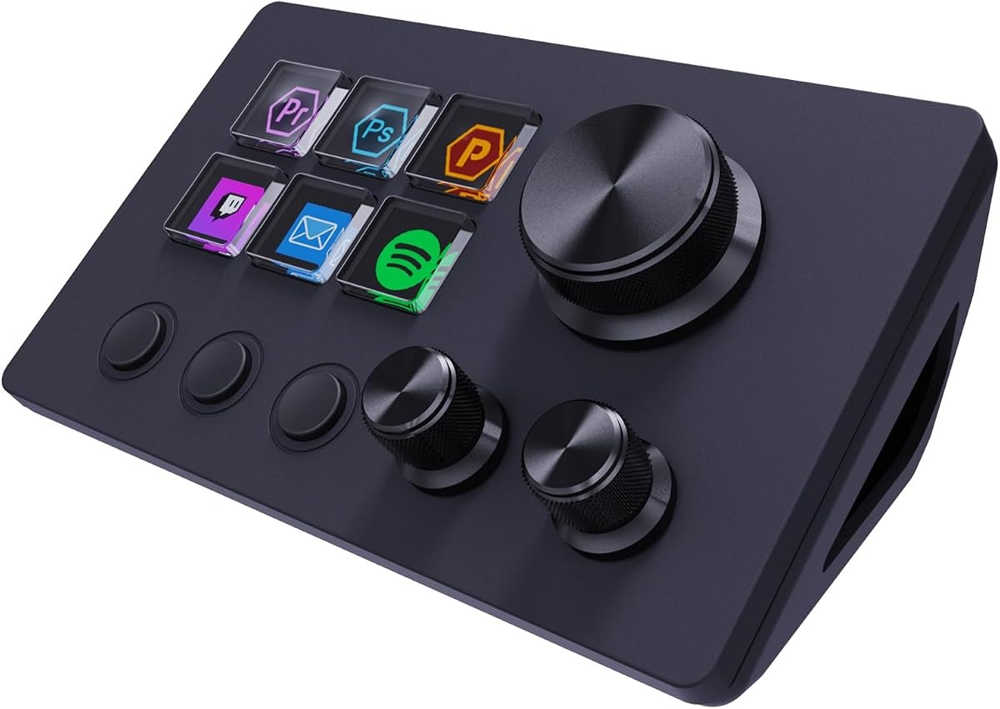
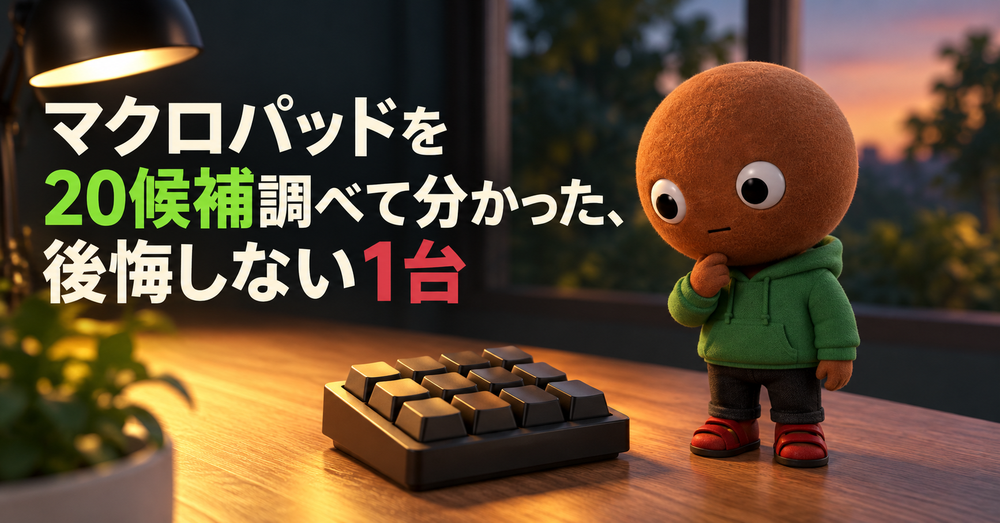
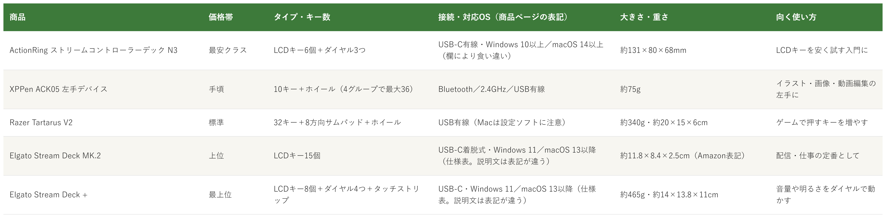

Amazonで見るマクロパッドやストリームデッキを選べず、買ってから使いこなせず後悔したくない人へ
そのマクロパッド、
キーの数と値段だけで選んでいませんか？
ストリームデッキ、左手デバイス、ゲーム用キーパッドなどマクロパッド20候補を調査。画面付きキーやダイヤル、対応OSと設定ソフトの注意も確認し、使い方が重複しない5商品を比較しました。
自分に合うマクロパッドを探す
この記事はAmazonアソシエイト・プログラムの参加者として、紹介料を得る場合があります（PR）。仕様は調査時点の情報です。
20候補から、使い方の違う5商品に絞りました。まずは気になる1つへ。向いている人・向いていない人と、低評価レビュー、買う前に確認したいこともまとめています。
20候補を調査
5商品に厳選
低評価レビューも確認済み
結論から先に言うと：
画面付きキーか、普通のキーか。ダイヤルは要るか、無線か、ゲームか編集か。何を優先するかで1つを。
横にスワイプして、5商品を見比べる
選び方の基準は3つ
調べてわかったのは、基準は3つでした。
1つ目は「キーの中に画面があるか」。今回の5商品のうち、画面付きのキー（LCDキー）があるのは、ActionRing、Elgato Stream Deck MK.2、Stream Deck +の3つで、キーの中に画像やアイコンを映せます（商品ページの表記）。XPPen ACK05とRazer Tartarus V2は画面が無い普通のキーなので、キーの数や形で選びます。
2つ目は「設定ソフトと対応OS」。5商品はどれも、専用ソフトでキーに操作を割り当てます。ElgatoはWindows 11とmacOS 13以降、ActionRingはWindows 10 64ビット版以上とmacOS 14.0以上と仕様欄に書かれていますが、3商品とも同じ商品ページの別の欄と表記が食い違っていました。ActionRingは「iOS, Windows」、Elgatoの2商品は商品説明に「macOS 10.15以降、Windows 10（64ビット）」とあります。XPPen ACK05は、商品ページの本文にOSの記載が見当たりませんでした。購入前に、自分のPCで使えるかを確認するのが大事です。
3つ目は「接続と大きさ」。無線（Bluetoothか専用レシーバー）に対応するのはXPPen ACK05だけで、ほかの4商品は有線です。重さは、約75g（XPPen ACK05）から約465g（Stream Deck +）まで、約6倍の差がありました。デスクのどこに置くかで選びます。
比較表

価格帯・タイプとキー数・接続と対応OS・大きさと重さ・向く使い方の比較（価格帯は、調査時点のAmazon出品価格の順に付けた目安です。価格は変動が大きく、商品ごとに差があります。対応OSや大きさは商品ページの表記です）
ActionRing ストリームコントローラーデック N3
- 最安クラス
- LCDキー6個＋ダイヤル3つ
- USB-C有線・Windows 10以上／macOS 14以上（欄により食い違い）
- 約131×80×68mm
XPPen ACK05 左手デバイス
- 手頃
- 10キー＋ホイール（4グループで最大36）
- Bluetooth／2.4GHz／USB有線
- 約75g
Razer Tartarus V2
- 標準
- 32キー＋8方向サムパッド＋ホイール
- USB有線（Macは設定ソフトに注意）
- 約340g・約20×15×6cm
Elgato Stream Deck MK.2
- 上位
- LCDキー15個
- USB-C着脱式・Windows 11／macOS 13以降（仕様表。説明文は表記が違う）
- 約11.8×8.4×2.5cm（Amazon表記）
Elgato Stream Deck +
- 最上位
- LCDキー8個＋ダイヤル4つ＋タッチストリップ
- USB-C・Windows 11／macOS 13以降（仕様表。説明文は表記が違う）
- 約465g・約14×13.8×11cm
向いてる人
- 画面付きキーのマクロパッドを、まず手頃に試したい人
- 音量などを、ダイヤルで操作したい人（ダイヤルは3つ）
- キーに好きな画像やGIFを表示したい人
向いてない人
- キーの数がたくさん要る人（LCDキーは6個。レビューには、ページを切り替えて増やす使い方とあります）
- 無線で使いたい人（有線のみ。レビューにも、有線専用なので注意、とあります）
- 設定ソフトの説明が少ないと困る人（★4のレビューに、説明がほとんど無く、初心者には厳しいかもという声）
選ぶ決め手LCDキー6個とダイヤル3つが付いて、5商品の中でいちばん手頃な価格帯です。評価は4.7と5商品で最も高い一方、件数は189件と少なめです。
低評価レビューを調べました
Amazonの評価は、★5が79%、★4が15%、★3が3%、★2が2%、★1が1%です（189件）。今回ページで確認できた日本のレビューに★1〜★3は見当たらず、気になる声は★4と★5の中にありました。★4には、設定ソフトの使い方の説明がほとんど無く（動画でも分かりにくい）、PCにある程度慣れていないと理解は難しいかも、という投稿があります（ソフトはよくできているとも書かれています）。★5にも、有線専用なのでそこは注意、機能が多くて逆に迷うかも、意識して左手を使わないと飾りになってしまう、という投稿がありました。個別の投稿の真偽までは確認できません。
参考：Amazon商品ページのレビュー（★4、★5）
ActionRingのストリームコントローラーデックは、
画面付きのキーを安く試したい人に
向く1台です。
LCDキーは6個、ダイヤルは3つで、
接続はUSB-Cの有線です。
対応OSの表記が食い違うので、
購入前に自分のPCで使えるか確認します。
向いてる人
- ペンタブや液タブで、イラスト・画像・動画編集をする人
- Bluetoothか専用レシーバーで、無線で使いたい人
- ホイールで、拡大縮小やブラシサイズを変えたい人
向いてない人
- 設定ソフトを入れていないPCでも、同じ設定で使いたい人（レビューに、会社のPCにはソフトを入れず使いたかったが使えなかったという声）
- iPadで全機能を使いたい人（レビューに、モード切り替えができず、一部のキー操作が効かなかったという声。一方、事前にPCで更新するとiPad Airで使えたという★5の声もあります）
- キーの中に画面がほしい人（画面は付きません）
選ぶ決め手約75gで、無線を含む3通りの接続に対応します。評価は3.9と5商品の中では低めですが、件数は1,163件あります。
低評価レビューを調べました
Amazonの評価は、★5が49%、★4が22%、★3が14%、★2が7%、★1が8%です（1,163件）。★1には、Bluetoothがなかなかつながらず、やっとつながったら真ん中のボタンが全て無反応で、返品した、という投稿がありました。★2には、自宅のPCで設定したあと、ソフトを入れていない会社のPCでも同じ設定を使いたかったが使えず、ソフトもよく落ちる、という投稿があります。★3には、iPadで使うとモード切り替えができず、一部のキー操作が効かなかった、という投稿がありました（ソフトウェア更新でiPad未対応から対応になった製品なので今後好転するかも、とも書かれています）。一方、★5には、事前にPCで必要なアップデートを行うとiPad Airで使えた、という投稿もあります。ほかに、滑りやすいので滑り止めを付けた、という★5の投稿もあります。このページのレビューには、2018〜2020年の海外のレビューも混ざっています。個別の投稿の真偽までは確認できません。
参考：Amazon商品ページのレビュー（★1、★2、★3、★5）
XPPenのACK05は、
左手でショートカットを使いたい人に
向く1台です。
キーは10個とホイール1個、
重さは約75gです。
接続はBluetooth・専用レシーバー・
USB有線の3種類です。
向いてる人
- ゲームで、押すキーを左手に集めたい人
- 手のひらを置いて、長く使いたい人（パームレスト付き）
- キーごとに、バックライトの色まで設定したい人（色数の表記は商品ページ内で食い違うため、購入前に確認）
向いてない人
- Macで設定したい人（価格.comのスペックはWindowsとMac対応ですが、Razer公式フォーラムに、macOS 10.15以降でSynapseが認識しないという2021年の回答があります）
- 親指で押すキーの位置が遠いと感じる人（★3のレビューに、手の大きさによっては負担という声）
- FPSゲームで、押し続ける操作をする人（★1のレビューに、十字キーの押し続けが効かなくなったという声）
選ぶ決め手キーが32個あり、8方向サムパッドとホイールまで付いて、5商品の中でいちばんキーの多い1台です。評価は4.2で、件数は4,840件と最も多くなっています。
低評価レビューを調べました
Amazonの評価は、★5が62%、★4が17%、★3が8%、★2が4%、★1が9%です（4,840件）。★1には、FPSゲーム用に買い、1週間ほどで「Razer Synapseが必要です」というマークが出て、十字キーの押し続けが効かなくなり、斜め移動も設定できず、まともに遊べなかった、という投稿がありました（アプリを終了した状態だと動いた、とも書かれています）。★3には、キーボードのカチカチ感は安心できるが、親指で押すスペースの位置が遠く、手の大きさによっては負担になる、という投稿があります。Macについては、Razer公式フォーラムの2021年の投稿に、Razerのサポートが「Mac版のSynapse 2はmacOS 10.14までしか対応しておらず、10.15以降では認識されないのは想定どおり」と答えたものがありました（現在の状況は確認できていません）。個別の投稿の真偽までは確認できません。
参考：Amazon商品ページのレビュー（★1、★3）、Razer Insider（公式フォーラム）、価格.com
RazerのTartarus V2は、
ゲームで左手のキーを増やしたい人に
向く1台です。
キーは32個、
重さは約340gです。
接続はUSB有線で、
設定はRazer Synapseで行います。
向いてる人
- OBSやDiscordなど、配信や通話の操作をワンタッチにしたい人
- 画面付きキーで、何のボタンか見て分かるようにしたい人
- Amazon.co.jpの販売で、保証が2年6か月ほしい人
向いてない人
- ダイヤルで音量などを動かしたい人（MK.2にダイヤルは無く、ダイヤルがあるのはStream Deck +）
- 価格を抑えたい人（ActionRingやXPPenより上の価格帯）
- 画面表示の不具合が心配な人（★3に、1か月足らずでボタンが白く霞んだという投稿。32キーのモデルの購入者の投稿です）
選ぶ決め手LCDキーが15個ある定番モデルで、評価は4.5、件数は720件です。Amazon.co.jpの販売で、保証は2年6か月と書かれています。
低評価レビューを調べました
Amazonの評価は、★5が71%、★4が17%、★3が8%、★2が2%、★1が2%です（720件）。★3には、使い始めて1か月足らずで全てのボタンが白く霞み、押せば動くが見づらい、抜いて何日か放電すると戻る、という投稿がありました（32キーのモデルの購入者の投稿で、同じ商品ページに混ざっています）。同じ投稿に、調べると同じ症状が見つかるが不良品とアドバイスされていた、自動スリープで定期的に画面が消えるようにしておくと大丈夫なよう、という記述もあります。同じ投稿には、ダイヤル付きのStream Deck +を使っていたが、配信をしない自分にはダイヤルがあまり役に立たなかった、とも書かれています。Amazonのレビュー要約（AI生成）には、設定は簡単という声と使い方が複雑という声があり、トラブルやエラーの報告も見られるとありました。Web検索では、ボタンの白化や不具合を独立して確認した記事は見つかりませんでした。個別の投稿の真偽までは確認できません。
参考：Amazon商品ページのレビュー（★3、レビュー要約）
ElgatoのStream Deck MK.2は、
画面付きキーを定番で使いたい人に
向く1台です。
LCDキーは15個、
卓上スタンドが付きます。
仕様表の対応OSは
Windows 11とmacOS 13以降です。
向いてる人
- 音量・明るさ・タイムライン操作を、ダイヤルで調整したい人
- 配信やスタジオ作業で、ミキサーのように使いたい人（商品名にオーディオミキサー、プロダクションコンソールとあります）
- キーの画面に加えて、タッチストリップの表示も使いたい人
向いてない人
- 価格を抑えたい人（5商品の中で最上位の価格帯）
- ボタンの数を多く使いたい人（LCDキーは8個。MK.2は15個）
- 画面まわりの仕上がりが気になる人（★3に、ディスプレイと保護ガラスの間に取れないゴミがあったという投稿）
選ぶ決め手ダイヤルが4つ、画面付きのタッチストリップまで付くのは、5商品の中でこの1台だけです。評価は4.4、件数は415件です。
低評価レビューを調べました
Amazonの評価は、★5が69%、★4が13%、★3が10%、★2が3%、★1が5%です（415件）。★3には、操作性が良く質感もよいが、ディスプレイと保護ガラスのような所の間に取れないゴミがあった、という投稿がありました（3人が参考になったとしています）。Amazonのレビュー要約（AI生成）には、操作性は高く評価され、価格・連携性・ディスプレイについては意見が分かれている、とあります。また、MK.2のページにある★3の投稿には、このStream Deck +を使っていたが、配信をしない自分にはダイヤルがあまり役に立たなかった、と書かれていました。個別の投稿の真偽までは確認できません。
参考：Amazon商品ページのレビュー（★3、レビュー要約）
ElgatoのStream Deck +は、
ダイヤルで音量や明るさを動かしたい人に
向く1台です。
LCDキーは8個、ダイヤルは4つで、
タッチストリップが付きます。
重さは約465g、
対応OSは仕様表でWindows 11とmacOS 13以降です。
20候補をどう絞った？ 調査の経緯を見る
マクロパッドは、画面付きのキーがあるか、ダイヤルがあるか、無線か、対応OSと設定ソフトはどうか、といった違いが大きく、「買ったのに自分のPCで使えなかった」「思ったよりキーが少ない」「設定が難しくて使いこなせない」というギャップが起きやすい道具です。正直どれを選べばいいのか迷います。
なので今回、ストリームデッキ、左手デバイス、ゲーム用キーパッドなどのマクロパッドの仕様を調べて比較しました。各商品ごとに、向いてる人・向いてない人も調べているので、自分に合う1つを探してみてください。
20候補から5つに絞り込みました
Amazonの商品ページを中心に調べました。今回はActionRing ストリームコントローラーデック N3・XPPen ACK05・Razer Tartarus V2・Elgato Stream Deck MK.2・Elgato Stream Deck +・Elgato Stream Deck Neo・Elgato Stream Deck Mini・Elgato Stream Deck XL・Elgato フットペダル型 Stream Deck・ロジクール MX クリエイティブ コンソール・VSDINSIDE M18・STREONOR 15キー・CineTreak CT-SD15・HUION Keydial mini・KB16 マクロメカニカルキーボード・サンワダイレクト 400-SKB085・Benboo 9キー3ダイヤル・Eoutegn ミニマクロキーパッド・Razer Tartarus Pro・Razer Orbweaverの20候補を調べ、使い方が重複しないよう5商品に絞りました。このうち、Razer Tartarus ProとRazer Orbweaverは、Amazonの検索結果の評価のみの確認で、ほかの18候補はAmazonの商品ページで、評価（付いているもの）と主な仕様を確認しました。
採用したのは、ActionRing（画面付きキーを安く試す）、XPPen ACK05（イラスト・動画編集の左手・無線）、Razer Tartarus V2（ゲーム用の32キー）、Elgato Stream Deck MK.2（画面付きキーの定番）、Elgato Stream Deck +（ダイヤルとタッチストリップ）の5つです。
見送ったのは、採用した商品と使い方が重なるものと、判断材料が足りないものです。画面付きキーを安く試す枠では、VSDINSIDE M18（評価4.4・864件・15キー）、STREONOR（評価4.6・210件）、CineTreak CT-SD15（評価4.6・3件）が重なります。M18は件数が864件と多く有力でしたが、ActionRingはダイヤルが3つ付き、5商品の中でいちばん手頃な価格帯でした。CineTreakは件数が3件と少なく、判断材料が足りませんでした。
Elgatoの枠では、Stream Deck Neo（評価4.5・218件）、Mini（評価4.4・98件）、XL（MK.2と同じページの選択肢で、評価も共通）が、MK.2やStream Deck +と同じ系列で使い方が重なるため、代表として2つに絞りました。フットペダル型（評価4.5・1,673件）は足で操作する別の用途のため、手元の比較から外しました。
イラスト・動画編集の枠では、HUION Keydial mini（評価3.7・250件）と、ロジクール MX クリエイティブ コンソール（評価3.5・51件。★1が23%）が重なります。どちらも評価がXPPen ACK05（3.9）以下で、用途も重なるため見送りました。
キー型の枠では、KB16（評価4.4・203件・16キー）が、Razer Tartarus V2やXPPen ACK05と使い方が重なります。サンワダイレクト 400-SKB085（12キー）は、商品ページに、設定内容を本体メモリーに保存し、専用ドライバが入っていないPCでも使えると書かれていて気になりましたが、Amazonの評価がまだ付いていませんでした。Benboo 9キー3ダイヤルとEoutegn ミニマクロキーパッドも、評価が付いておらず、判断材料が足りませんでした。ゲーム用では、Razer Tartarus Pro（検索結果の評価3.9）とRazer Orbweaver（2014年モデルの表記・評価4.6）は、検索結果に出品価格が表示されなかったため、Tartarus V2に絞りました。
低評価の商品も見ました
5商品それぞれについて、Amazon商品ページに載っている★1〜★5のレビューを確認しました。個別レビューの真偽までは検証できないため、確認できた範囲の傾向としてまとめています。Web検索では、各商品の低評価を独立して検証した記事までは見つかりませんでした（Razer Tartarus V2のMacの設定だけ、Razer公式フォーラムの投稿がありました）。
確認できた指摘は、ActionRingの設定ソフトの説明が少ない点（1件）、XPPen ACK05のBluetooth接続・別PCでの設定・iPadでの動作（3件）、Razer Tartarus V2の十字キーの反応と親指キーの位置（2件）、Stream Deck MK.2のボタンの白化（1件・32キーのモデルの購入者）、Stream Deck +の画面の隙間のゴミ（1件）です。
調べてみて驚いたこと
調査中、同じ商品ページの中で、対応OSの数字が食い違うものがあって驚きました。ActionRingは、仕様欄が「Windows 10 64ビット版以上、macOS 14.0以上」なのに、別の欄は「iOS, Windows」でした。Elgatoの2商品も、仕様表は「Windows 11、macOS 13以降」ですが、商品説明には「macOS 10.15以降、Windows 10（64ビット）」とあります（新しい方は仕様表の表記です）。どちらに合わせるかは、購入前にElgato公式で確認してください。Razer Tartarus V2も、価格.comのスペックはWindowsとMac対応ですが、Razer公式フォーラムには、Mac版のSynapseが古いmacOSまでしか対応していないという回答がありました。
もう1つ驚いたのは、設定の持ち運びです。XPPen ACK05のレビューには、自宅のPCで設定したあと、ソフトを入れていない会社のPCで同じ設定を使えなかったという投稿がありました。会社のPCなど、ソフトを入れられない場所で使うなら、設定の保存先を先に確認した方が安心です。
さらに、価格帯は最安クラスから最上位まで幅がありますが、評価は4.7（ActionRing）、3.9（XPPen ACK05）、4.2（Razer）、4.5（MK.2）、4.4（Stream Deck +）で、価格の高さと評価は並びませんでした。この記事では金額を載せず、相対的な目安で示しています。購入前に、Amazonの販売元と価格を確認してください。
つまり、キーの数や価格より、自分のPCで使えるか、何を押したいか、どこで使うかで選ぶのが大事だと分かりました。
マクロパッドを買う前に確認したいこと
マクロパッドは、買ってから「自分のPCで動かなかった」「設定が使えなかった」と気づくことが多い道具です。ここでは、今回確認できた根拠のある注意だけを載せます。
対応OSは、商品ページの仕様欄で、自分のWindowsやmacOSのバージョンに合うかを確認します。ActionRingやElgatoのように、同じページで表記が食い違うものもあります。
設定ソフトを入れられないPCで使うなら、設定が本体に残るかを確認します。サンワダイレクト 400-SKB085の商品ページには、設定内容を本体メモリーに保存すると書かれていますが、今回の5商品では、商品ページでそうした記載を確認できませんでした。
販売元と保証も見ておきます。ActionRingは販売元がBasicolorTech HK Limitedで保証24か月、XPPen ACK05は保証1年、Razer Tartarus V2は第三者の出品者の販売で二年間のメーカー保証と書かれ（中古の出品も混ざるので、新品かどうかも確認します）、Elgatoの2商品はAmazon.co.jpの販売で保証は2年6か月（レシートや領収書が必要）です。今回確認できた範囲では、安全面に関わる★1の投稿は見当たりませんでした。
迷ったらこれ
ここまで読んでも迷ったら、画面付きのキー15個で、Amazon.co.jpの販売・保証2年6か月、Elgato Stream Deck MK.2が、一番外しにくいと考えます（評価は4.5、720件）。画面付きキーを安く試したいならActionRing、左手のショートカットだけならXPPen ACK05も選択肢です。MK.2の対応OSは、仕様表ではWindows 11とmacOS 13以降ですが、商品説明の表記は違うので、購入前に確認してください。
Amazonで見る→よくある質問
Q. ストリームデッキと、普通のマクロパッド（左手デバイス）は何が違いますか。
A. 今回の5商品でいうと、キーの中に画面があるのは、ActionRing、Elgato Stream Deck MK.2、Stream Deck +の3つで、画像やアイコンをキーに映せます（商品ページの表記）。XPPen ACK05とRazer Tartarus V2は画面が無い普通のキーで、キーの数や形で選びます。
Q. Macでも使えますか。
A. Elgatoの2商品はmacOS 13以降、ActionRingはmacOS 14.0以上と、仕様欄に書かれています（Elgatoの2商品は商品説明に「macOS 10.15以降」ともあり、同じページで表記が違います）。XPPen ACK05は、商品ページの本文にOSの記載が見当たりませんでした。Razer Tartarus V2は、価格.comのスペックではMac対応ですが、Razer公式フォーラムに、macOS 10.15以降でSynapseが認識しないという2021年の回答があります。購入前に、メーカーの最新の情報で確認してください。
Q. 会社のPCなど、ソフトを入れられないPCでも使えますか。
A. XPPen ACK05のレビューに、ソフトを入れていないPCで同じ設定を使えなかったという投稿がありました。今回の5商品では、設定が本体に残ると商品ページで確認できたものは無かったので、使う前にメーカーの説明で確認してください。
Q. 無線で使えますか。
A. 今回の5商品で、無線に対応するのはXPPen ACK05（Bluetoothと専用レシーバー）だけです。ほかの4商品は、有線の接続です。
こんな記事も書いてます
ミートボーの調査部屋で他の記事も見る（全本）


この記事はAmazonアソシエイト・プログラムの参加者として、紹介料を得る場合があります（PR）。仕様は調査時点の情報です。
出典
- Razer Insider（公式フォーラム）tartarus v2 not detected by synapse mac（Macでの対応状況・2021年）：insider.razer.com
- 価格.com Razer Tartarus V2 RZ07-02270100-R3M1（対応OSの表記）：kakaku.com
- Amazon.co.jp ActionRing ストリームコントローラーデック N3（LCDキー6個＋ダイヤル3つ）：amazon.co.jp
- Amazon.co.jp XPPen ACK05 左手デバイス（10キー＋ホイール）：amazon.co.jp
- Amazon.co.jp Razer Tartarus V2（32キー）：amazon.co.jp
- Amazon.co.jp Elgato Stream Deck MK.2（LCDキー15個）：amazon.co.jp
- Amazon.co.jp Elgato Stream Deck +（LCDキー8個＋ダイヤル4つ）：amazon.co.jp